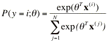
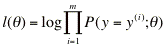
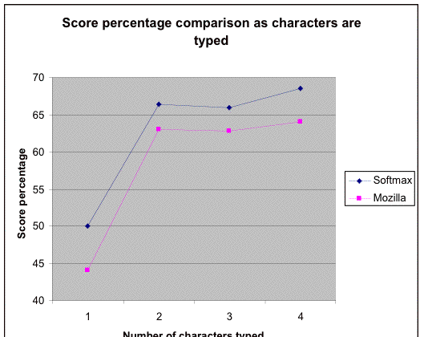
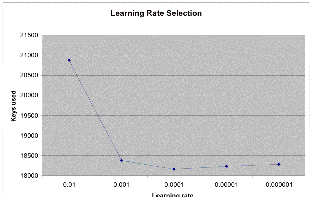

Using Supervised Learning to
Improve Url Ordering in Autocomplete
Nisheeth Ranjan (nisheeth at cs
dot stanford dot
edu)
Andrew Ng (ang at cs
dot stanford dot
edu)
Computer Science
Department, Stanford University
Stanford, CA
94305 USA
Abstract
The autocomplete feature in web browsers uses what the user has typed in the url bar as a prefix string to query the user's web traversal history and presents the matching urls in an autocomplete list. If one of the urls in the autocomplete list is where the user wants to go, then he/she can directly select it from the list instead of having to type out the entire url. Mozilla, the leading open source web browser, sorts its autocomplete list using a hardcoded algorithm that uses features of the url like frequency, whether it is a url with a trailing slash, etc. We try to improve on Mozilla's ordering by using a simple softmax like probabilistic model that computes the probability of selection of a url in an autocomplete list. We order the urls in the autocomplete list in descending order of their probability of selection. We design some scoring metrics to compare the performance of the Mozilla and Softmax orderings on a data set that we collected from the Mozilla community for this research. We try both offline and online learning approaches to fit the parameters of our model and find that online learning does marginally better. Our final result is that the Softmax ordering saves the user an average of approximately one keystroke per autocomplete event.
Introduction
We model the autocomplete problem as follows. Say an autocomplete list is composed of N urls. We assume that the probability that the i'th url gets selected by the user in that autocomplete list is given by the formula below: (1)
In the equation above, x is the n-dimensional input vector, and θ is the n-dimensional parameter vector. Assuming that there are m separate autocomplete events, the log likelihood of our parameters is given by:
 (2)
In the above equation, y(i) is the index of the selected url in the i'th autocomplete event. l(θ) turns out to be a concave function in θ and Newton's method can be used to find the value of θ that maximizes l(θ).
Once we've found the maximum likelihood estimate of θ on a training set, we can use (1) to find the probability of user selection for each url in the autocomplete list and order the urls in descending order of that probability.
Offline learning
In order to learn θ, the parameters in our model, we needed data on how urls in autocomplete lists are chosen by current browser users. To this end, we recruited approximately 250 Mozilla users to run an instrumented version of Mozilla that captured their url traversal and autocomplete usage information to a local data file. After a period of two weeks to a month, we asked them to submit their data files back to us.We then wrote a perl script that took each data file as input and generated an output file containing an Nix1 matrix of feature vectors for the i'th autocomplete event in the data file, i ranging from 1 to m. For example, here's a snippet from the output file for a single autocomplete event:
slashdot.org/, 1045072282056876, 1, 1, 3.00, 3.00, 3.01, 3.03, 3.10, 3.26, 3.68, 4.94, 8.99, 22.00, 1.00, 1.00, 0.00, 0.00, 0.00, 0.00, 1.00, 0.00, 0.00, 0.00, 1.00, 0.00, 0.00, 0.00, 0.00, 3.00, 0.00, 0.00, 0.00, 0.00, 0.00, 2.00, 0.00, 18.00, 1.00, 2.00, 0.00, 14.00, 0.00, 1.00, 2.00, 1.00, 16.00, 12.00, 24.00, 8.00, 0.00, 0.00, 0.00, 0.00
slashdot.org/pollBooth.pl?qid=926&aid=2, 1045161387935626, 0, 0, 0.00, 0.00, 0.00, 0.00, 0.00, 0.00, 0.01, 0.06, 0.26, 1.00, 1.00, 1.00, 0.00, 0.00, 0.00, 0.00, 1.00, 0.00, 0.00, 0.00, 1.00, 0.00, 0.00, 0.00, 0.00, 3.00, 1.00, 1.00, 2.00, 0.00, 0.00, 2.00, 4.00, 32.00, 1.00, 1.00, 0.00, 11.00, 0.00, 1.00, 1.00, 1.00, 12.00, 12.00, 46.00, 34.00, 0.00, 0.00, 0.00, 0.00
slashdot.org/pollBooth.pl?qid=927&aid=2, 1045251640566251, 0, 0, 0.00, 0.00, 0.00, 0.00, 0.00, 0.00, 0.01, 0.07, 0.29, 1.00, 1.00, 1.00, 0.00, 0.00, 0.00, 0.00, 1.00, 0.00, 0.00, 0.00, 1.00, 0.00, 0.00, 0.00, 0.00, 3.00, 1.00, 1.00, 2.00, 0.00, 0.00, 2.00, 4.00, 32.00, 1.00, 1.00, 0.00, 11.00, 0.00, 1.00, 1.00, 1.00, 12.00, 12.00, 46.00, 34.00, 0.00, 0.00, 0.00, 0.00
No_url, 0.00, 0.00, 0.00, 0.00, 0.00, 0.00, 0.00, 0.00, 0.00, 0.00, 0.00, 0.00, 0.00, 0.00, 0.00, 0.00, 0.00, 0.00, 0.00, 0.00, 0.00, 0.00, 0.00, 0.00, 0.00, 0.00, 0.00, 0.00, 0.00, 0.00, 0.00, 0.00, 0.00, 0.00, 0.00, 0.00, 0.00, 0.00, 0.00, 0.00, 0.00, 0.00, 0.00, 0.00, 0.00, 0.00, 0.00, 0.00, 0.00, 0.00, 0.00, 0.00, 0.00
The above output file describes an autocomplete event where the autcomplete list contained three urls and the first url was selected by the user (the third comma separated field denotes whether the url was selected by the user). There are 54 comma separated fields per url line and the following table describes what those fields are:
|
Field number |
Description of Field |
|
1 |
Url |
|
2 |
Url ID |
|
3 |
User selected the url |
|
4 |
The url contains a trailing slash |
|
5 |
Generated frequency-recency metric (0.1) |
|
6 |
Generated frequency-recency metric (0.2) |
|
7 |
Generated frequency-recency metric (0.3) |
|
8 |
Generated frequency-recency metric (0.4) |
|
9 |
Generated frequency-recency metric (0.5) |
|
10 |
Generated frequency-recency metric (0.6) |
|
11 |
Generated frequency-recency metric (0.7) |
|
12 |
Generated frequency-recency metric (0.8) |
|
13 |
Generated frequency-recency metric (0.9) |
|
14 |
Generated frequency-recency metric (1.0) |
|
15 |
Mozilla captured frequency-recency metric (0.2) |
|
16 |
Mozilla captured frequency-recency metric (0.8) |
|
17 |
Url typed by user |
|
18 |
Url ends in .htm or .html |
|
19 |
Is it a .com url? |
|
20 |
Is it a .edu url? |
|
21 |
Is it a .org url? |
|
22 |
Is it a .net url? |
|
23 |
Is it a .gov url? |
|
24 |
Url contains a ~ |
|
25 |
Url starts with http:// |
|
26 |
Url starts with ftp:// |
|
27 |
Url starts with file:// |
|
28 |
Url starts with https:// |
|
29 |
Url ends in two letter country code? |
|
30 |
Number of /s in the url |
|
31 |
Number of ?s in the url |
|
32 |
Number of &s in the url |
|
33 |
Number of =s in the url |
|
34 |
Number of #s in the url |
|
35 |
Number of +s in the url |
|
36 |
Number of .s in the url |
|
37 |
Number of numerical [0-9] chars in url |
|
38 |
Number of alphabetical [a-zA-Z] chars in url |
|
39 |
Number of non-alphanumeric, non-[/?&=#+.] chars in url |
|
40 |
Number of .s in the hostname |
|
41 |
Number of numerical [0-9] chars in hostname |
|
42 |
Number of alphabetical [a-zA-Z] chars in hostname |
|
43 |
Number of non-alphanumeric, non-[/?&=#+.] chars in hostname |
|
44 |
Number of .s in hostname if we omit initial "www." or "ftp." |
|
45 |
Number of .s in hostname if we omit ending ".XX" country code |
|
46 |
Number of .s in hostname if we omit initial "www." and ending ".XX" country code |
|
47 |
Number of characters in url |
|
48 |
Number of characters in hostname |
|
49 |
Number of characters in hostname excluding initial "www." or "ftp." |
|
50 |
Number of characters in URL excluding hostname |
|
51 |
Number of characters in web page title |
|
52 |
Is this a google search url? |
|
53 |
Is this a netscape search url? |
|
54 |
Is this a yahoo search url? |
To relate these fields back to (1), x(i) is the 51 dimensional vector containing the numeric values from field 4 through field 54 for the i'th url in the autocomplete event and θ is the 51 dimensional parameter vector that we want to learn.
We used Newton's method to find the parameter vector, θ, that maximized the log likelihood function, (2). We devised a simple scoring metric to compare the Mozilla ordering with the Softmax ordering. An ordering got a score of 1/i on an autocomplete event where i was the position (counting from the top of the list) of the user selected url.
Initial Results for Offline Learning
The Mozilla ordering scored 3609.23 out of 4343 (83.1%) and beat the Softmax ordering which scored 3460.85 out of 4343 (79.69%) using the autocomplete lists we got back in the data files.Simulating Browser History
We reasoned that the autocomplete lists we had used for our training were captured after the user had typed enough characters in the url bar to make the url they wanted to select bubble up to the top in each list. We wondered whether we could show that the Softmax ordering does better than the Mozilla ordering while the first few characters are being typed. To find out, we extended our perl script to take the number of characters typed in the url bar, C, as an input parameter and generate output files where each autocomplete list was built by matching urls from the set of all urls visited before. Essentially, we simulated browser history by storing visited urls in a hash and generating the autocomplete list that the browser would have generated when C prefix characters of the user selected url were typed in the url bar.We created four data sets for the 1 character typed, 2 characters typed, 3 characters typed, and 4 characters typed scenarios. We trained on approximately 70% of that data and tested on the remaining 30%. Figure 1 shows our results. The Softmax ordering consistently did better than the Mozilla ordering.

Figure 1
A Better Scoring Metric
It was hard for us to see the relationship between score percentage numbers and actual utility to the user. So, we decided on measuring user utility more directly. From a user's perspective, the important metric is the number of keys typed to get to the next url. We extended our perl script to- simulate typing a url character by character,
- create a Mozilla and Softmax ordering of the autocomplete list after each character is typed, and
- keep track of the minimum number of keystrokes needed to access the user's url.
Final Results for Offline Learning
On running our minimum keys needed simulation on the entire data set, we found that the Softmax ordering saved the user 13171 keystrokes over 14647 autocomplete events, an average savings of 0.90 keystrokes per event.Online Learning
Till now, we'd kept our parameter vector, θ, fixed while scoring the Softmax orderings on the test set. We now decided to explore whether an online learning paradigm where the parameters are updated to adapt to an individual user's preferences would improve the ordering further. We changed our perl script yet again to update θ after each autocomplete event such that we take a stochastic gradient ascent step towards maximizing log(P(y = i; θ)), where P is given by (1).We created a subset of the data set to test different learning rates and saw that a learning rate of 0.0001 yielded the lowest number of keys needed by the Softmax ordering to select the user's url in all the autocomplete events contained in the data subset. Figure 2 shows how the different learning rates performed on the data subset. We also computed a heuristic that would use a higher learning rate at autocomplete events where the user selected url was high on the Softmax ordered list. To implement this heuristic, we computed a multiplier as follows:
If the minimum chars needed by softmax (M) < 10
multiplier = 10 - M
else
multiplier = 1/M
We then used this multiplier in the stochastic gradient ascent step. For autocomplete events where the user's url could be accessed in less than 10 keystrokes, the multiplier was a positive integer and magnified the update of the parameter vector. For events where the user's url was accessed in 10 or more keystrokes, the multiplier was a positive number between 0 and 1 and reduced the update of the parameter vector.

Figure 2